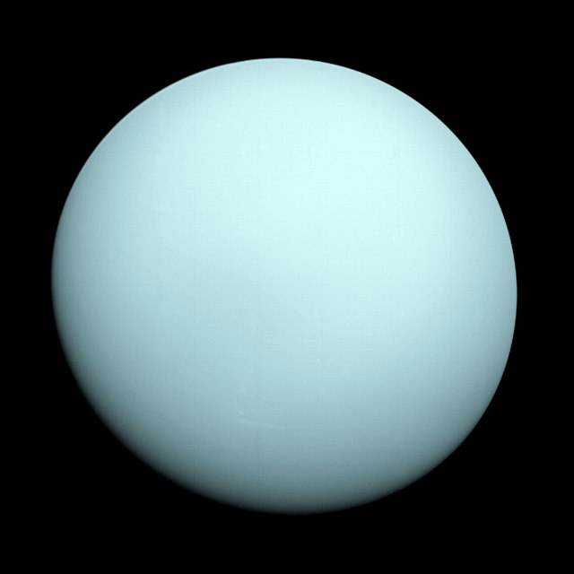
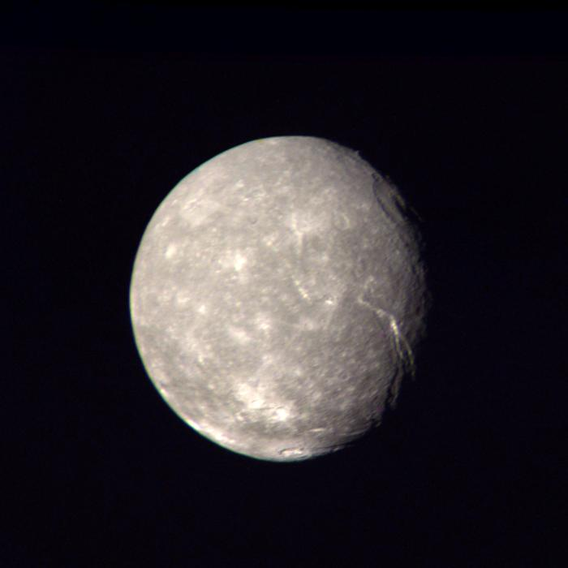
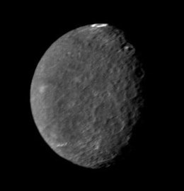

Uranus
Description
Uranus est la septième planète du Système solaire par ordre d'éloignement du Soleil. Elle orbite autour de celui-ci à une distance d'environ 19,2 unités astronomiques (2,87 milliards de kilomètres), avec une période de révolution de 84,05 années terrestres. Il s'agit de la quatrième planète la plus massive du Système solaire et de la troisième plus grande par la taille. Elle est la première planète découverte à l’époque moderne avec un télescope et non connue depuis l'Antiquité. Bien qu'elle soit visible à l’œil nu, son caractère planétaire n'est alors pas identifié en raison de son très faible éclat et de son déplacement apparent dans le ciel très lent. William Herschel l'observe pour la première fois le 13 mars 1781 et la confirmation qu'il s'agit d'une planète et non d'une comète est faite pendant les mois qui suivent. Comme Jupiter et Saturne, l'atmosphère d'Uranus est composée principalement d'hydrogène et d'hélium avec des traces d'hydrocarbures. Cependant, comme Neptune, elle contient une proportion plus élevée de « glaces » au sens physique, c'est-à-dire de substances volatiles telles que l'eau, l'ammoniac et le méthane, tandis que l'intérieur de la planète est principalement composé de glaces et de roches, d'où leur nom de « géantes de glaces ». Par ailleurs, le méthane est le principal responsable de la teinte aigue-marine de la planète. Son atmosphère planétaire est la plus froide du Système solaire, avec une température minimale de 49 K (−224 °C) à la tropopause, et présente une structure nuageuse en couches.
Atmosphére
Bien qu'il n'y ait pas de surface solide définie à l'intérieur d'Uranus, la partie la plus externe de l'enveloppe gazeuse d'Uranus est appelée son atmosphère92. L'atmosphère uranienne peut être divisée en trois couches : la troposphère, entre -300 et 50 km avec des pressions allant de 100 à 0,1 bar, puis la stratosphère, de 50 à 4 000 km et des pressions allant de 0.1 à 10−10 bar, puis la thermosphère, s'étendant de 4 000 km jusqu'à 50 000 km de la surface — soit près de deux rayons planétaires depuis la surface à 1 bar.
climat
Aux longueurs d'onde ultraviolettes et visibles, l'atmosphère d'Uranus apparaît terne par rapport aux autres planètes géantes88. Lorsque Voyager 2 survole Uranus en 1986, la sonde observe un faible total de dix caractéristiques nuages sur toute la planète112,113. Une explication proposée pour cette pénurie de caractéristiques est que la chaleur interne d'Uranus est nettement inférieure à celle des autres planètes géantes, dont Neptune qui lui ressemble pourtant par ailleurs89. La température la plus basse enregistrée à la tropopause d'Uranus est de 49 K (−224 °C), faisant d'Uranus la planète la plus froide du Système solaire
Titania, également appelé Uranus III, est le plus grand satellite naturel d'Uranus et le huitième par sa masse du Système solaire. Découvert par William Herschel en 1787, il doit son nom à Titania, la reine des fées de la pièce de Shakespeare, Le Songe d'une nuit d'été. Son orbite autour d'Uranus est entièrement située au sein de la magnétosphère de la planète. Titania est constitué de glace et de roche en quantités approximativement égales. Le satellite est probablement différencié en un noyau rocheux et un manteau glacé. Une couche d'eau liquide pourrait être présente à l'interface entre le noyau et le manteau. La surface de Titania, sombre et légèrement rouge, a été modelée à la fois par les impacts d'astéroïdes et de comètes, et par les processus endogènes. Elle est couverte de nombreux cratères d'impacts, certains atteignant jusqu'à 326 km de diamètre, mais est moins cratérisée que la surface d'Obéron, le grand satellite le plus externe du système uranien. Titania a probablement connu un épisode de resurfaçage endogène qui a recouvert les surfaces les plus anciennes très cratérisées. Par la suite, l'expansion de son intérieur a engendré sur la surface de Titania un réseau de canyons et d'escarpements de faille. À l'instar de toutes les lunes majeures d'Uranus, elle s'est probablement formée à partir du disque d'accrétion qui entourait Uranus juste après la formation de la planète. Le système uranien n'a été étudié de près qu'une seule fois, par la sonde Voyager 2 en janvier 1986, qui a pris plusieurs images de Titania, permettant ainsi de cartographier environ 40 % de la surface de cette lune.
Umbriel, également appelé Uranus II, est le troisième satellite naturel d'Uranus par la taille. Découvert en 1851 par William Lassell, en même temps qu'Ariel, il reçoit alors le nom d'un personnage du poème La Boucle de cheveux enlevée d'Alexander Pope. Umbriel est principalement constitué de glace, et d'une fraction substantielle de roche. Sa structure interne pourrait être différenciée entre un noyau rocheux et un manteau de glace. Sa surface est la plus sombre parmi celles des lunes d'Uranus, et aurait été principalement façonnée par des impacts météoritiques. Cependant, la présence de canyons suggère l'existence de processus endogènes dus à l'expansion de son intérieur au début de son évolution. Le satellite pourrait avoir subi un resurfaçage endogène qui aurait recouvert une partie des surfaces les plus anciennes. Parmi les satellites d'Uranus, Umbriel a la surface la plus marquée par des cratères d'impact après Obéron, certains mesurant jusqu'à 210 km de diamètre. La principale caractéristique géologique à la surface d'Umbriel est un anneau de matériaux clairs au fond du cratère Wunda. Comme tous les satellites d'Uranus, Umbriel s'est probablement formé à partir d'un disque d'accrétion entourant la planète juste après sa formation. Le système d'Uranus a été étudié de près une seule fois, par la sonde Voyager 2, en janvier 1986. Elle a pris plusieurs images d'Umbriel, qui ont permis de cartographier environ 40 % de sa surface
| masse | graviter | duree rotation | satellites | revolution | Uranus | 8,681 × 10^25 kg | 8,87 m/s² | 0j 17h 14m | 27 | 84 ans | Titania | 3,527 ± 0,09 × 1021 (5,908 × 10−4 Terre) kg | 0,38 m/s2 | verouillage gravitationnelle | 0 | 8,7 jours | umbriel | ,172 ± 0,135 ×1021 kg | 0,23 m/s2 | verouillage gravitationnelle | 0 | 4,144 |
|---|